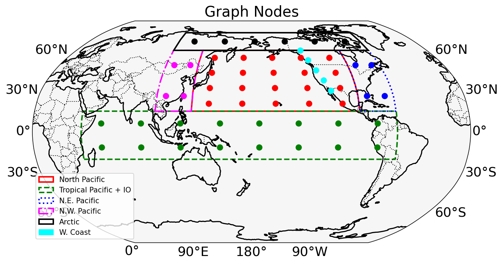

Z500, IVT_x, IVT_y,
+ tendencies, etc.

| Folder | Forcing | Size | Members |
|---|---|---|---|
BHISTcmip6 |
CMIP6 forcing | ~66 TB | 50 |
BHISTsmbb |
Smoothed biomass-burning forcing | ~19 TB | 50 |
b.e21.<exp>.f09_g17.LE2-<id>.<nnn>
FLUT (OLR proxy), PS, TS, Z500
U, V, Q on model levels;
U_plev, V_plev, Q_plev on pressure levels
U200, V200, U850
U, V, Q
Codes_for_RMM/: MJO RMM EOF and anomaly scripts
YYYYMMDD_for_RMM_indices/: calendar lookup files
RMM_pattern_correlations/: FLUT pattern-correlation tables